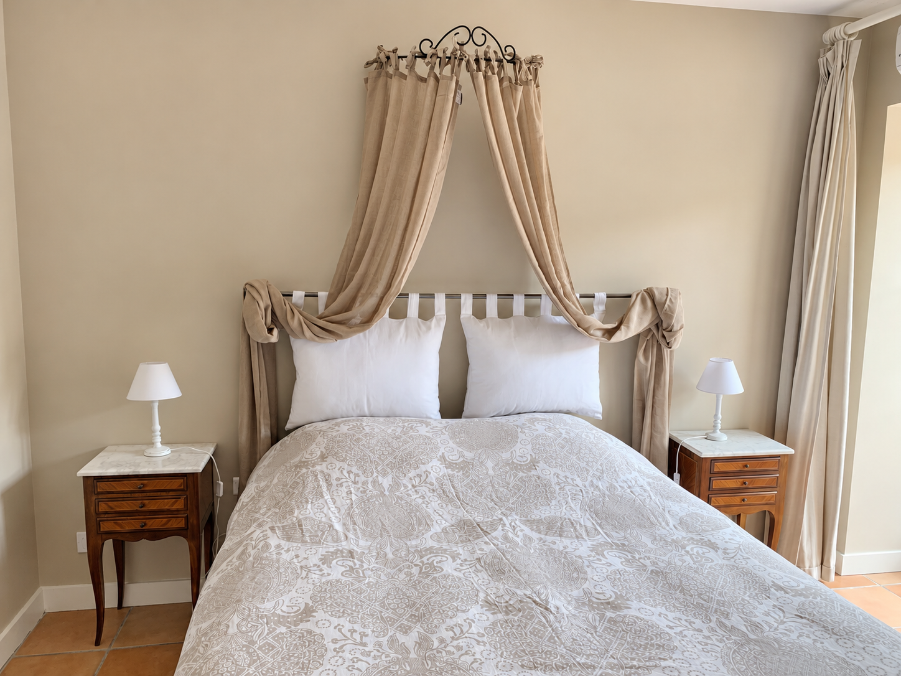
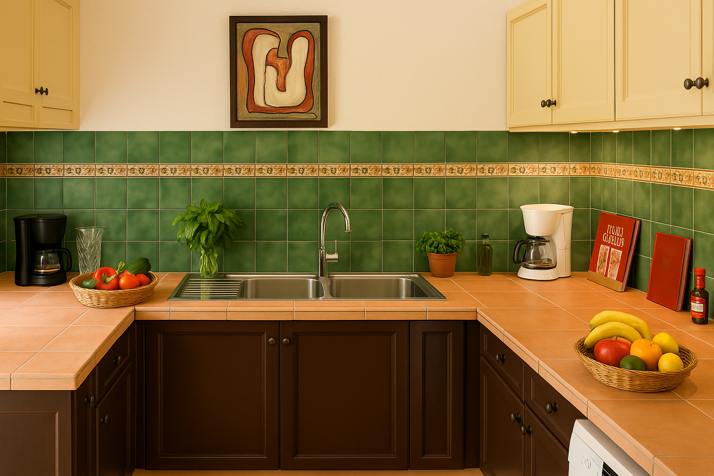
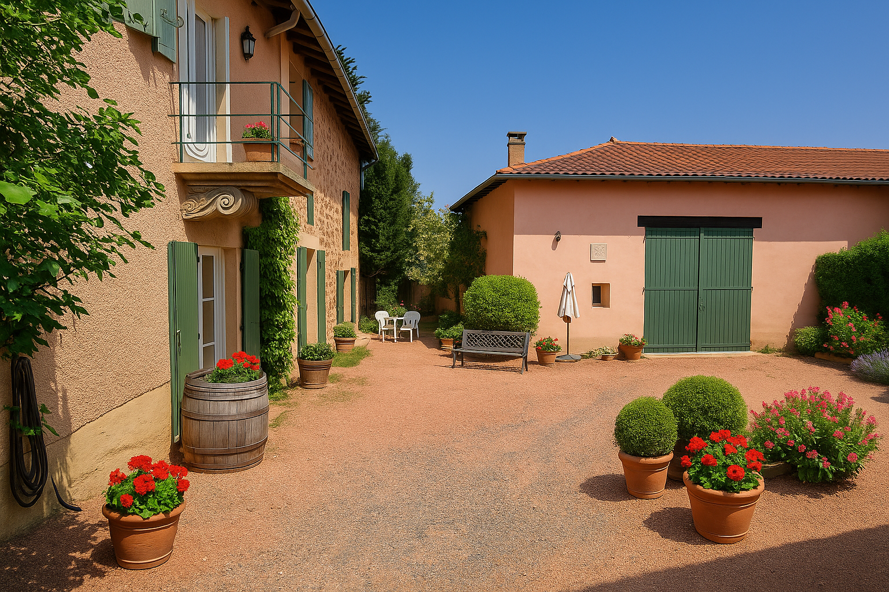
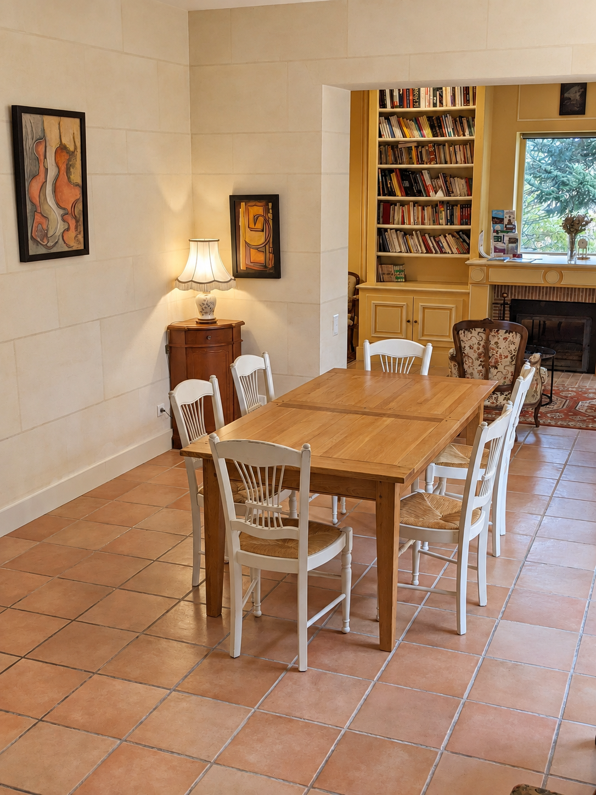
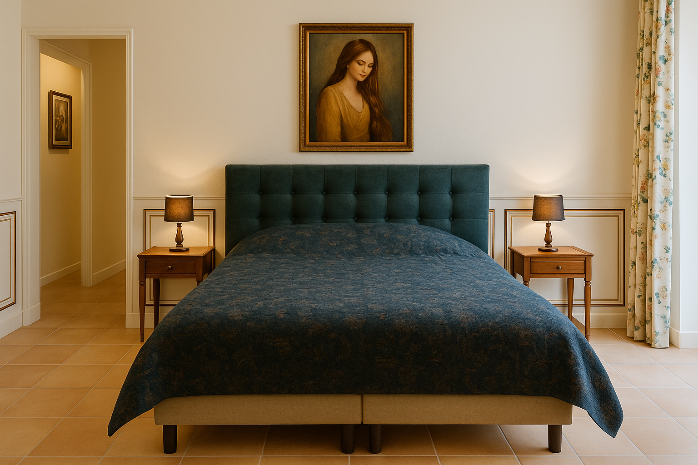
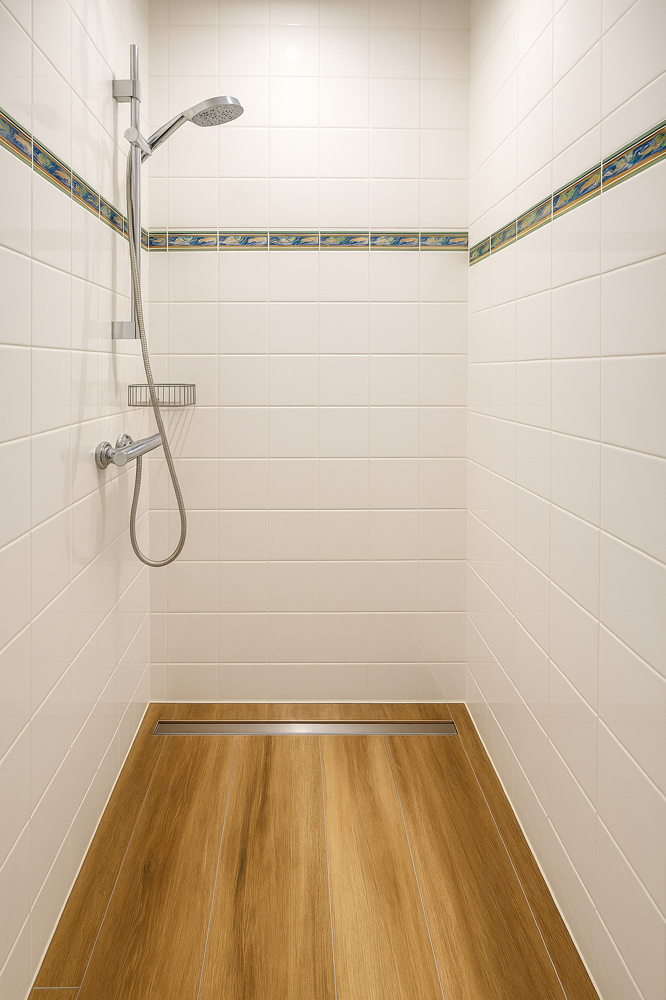
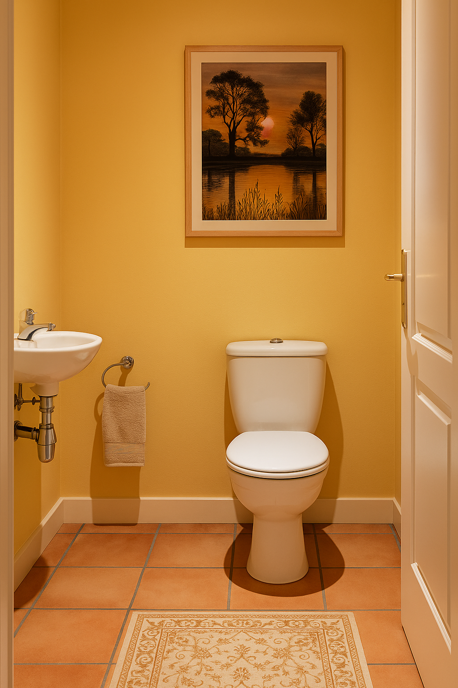

105 m²de plain-pied
Un air de Toscane
au cœur du Beaujolais
Une maison de caractère de 105 m², jusqu’à 6 personnes, dans le village de Salles-Arbuissonnas-en-Beaujolais.
Jusqu’à 6 adultesadultes uniquement
2 salles de bainset 2 WC
5 étoilesconfort & caractère
Parking privédans la propriété
Le gîte
Un gîte d’exception
en Beaujolais
Bienvenue à Un air de Toscane, un gîte de charme classé 5 étoiles, situé à Salles-Arbuissonnas, au cœur du Beaujolais des Pierres Dorées.
Dans une maison indépendante de 105 m², découvrez un intérieur élégant et chaleureux, inspiré par l’art de vivre toscan. Idéal pour un séjour entre adultes, le gîte allie confort moderne et authenticité.
Profitez d’une cour privative calme et fleurie, d’un accès privilégié aux vignobles et aux villages de caractère.
En savoir plus sur le gîte →



Visite
Le charme du lieu, pièce par pièce
Découvrez les espaces du gîte, de la cour privative aux chambres et pièces de vie.






Confort
Tout ce qu’il faut pour se sentir chez soi
Les chambres
Chambre Gamay : lit 160 × 200, transformable en 2 lits 80 × 200.
Chambre Le Prieuré : lit 160 × 200.
Salon : canapé convertible haut de gamme 140 × 190.
Les salles de bains
Une salle de bains avec douche et une seconde avec baignoire, chacune avec vasque, sèche-cheveux et sèche-serviettes.
Deux WC.
La cuisine
Réfrigérateur, congélateur, four, micro-ondes, plaques de cuisson, machine à café, bouilloire, grille-pain, lave-vaisselle et ustensiles.
À l’extérieur
Cour et terrasse privées, mobilier de jardin, transats et barbecue. Parking privé et fermé dans la propriété.
Conditions du séjour
Réservation directe, sans commission
150 € par nuit jusqu’à 4 adultes. Au-delà de 4 adultes, ajoutez 15 € par adulte supplémentaire et par nuit. Séjour de 2 nuits minimum.
Acompte30 %
Caution450 €
Arrivée16h–20h
Départ9h–11h
Adultes uniquement · enfants non admis · ménage à la charge du locataire, sinon 120 € retenus sur la caution · animaux non admis · logement non-fumeur · fêtes non autorisées.
Autour du gîte
Le Beaujolais à votre porte
Vignes, patrimoine, villages de caractère et bonnes tables : le gîte est un point de départ pratique pour découvrir la région.
Dégustation de vins
Rencontrez les vignerons du secteur et découvrez les crus et appellations du Beaujolais.
Clochemerle
Le célèbre village de Vaux-en-Beaujolais et son caveau, au milieu des paysages viticoles.
Villefranche-sur-Saône
Commerces, marché, musée Paul-Dini et centre historique à quelques minutes en voiture.
Touroparc
Une sortie familiale avec parc zoologique et attractions.
90, rue de la Croix-Rousse
69460 Salles-Arbuissonnas-en-Beaujolais
À votre arrivée, passez en voiture sous le porche et garez-vous au fond de la cour.
Ouvrir dans Google MapsAvis voyageurs
9,5 / 10 Exceptionnel
★★★★★« Joli cadre, intérieur chaleureux, literie impeccable, grands placards de rangement, propreté, contacts et accueil au top. »
★★★★☆« Très bon accueil, logement fonctionnel et propre. À recommander. »
Réservation directe
Parlez-nous de votre séjour
Pas de plateforme intermédiaire ni de commission. Envoyez simplement votre demande ; vous restez en contact direct avec les propriétaires.
06 49 48 60 33Pour une demande particulière sur la durée, les horaires ou l’organisation du séjour, appelez-nous directement.